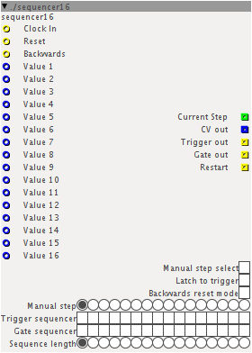

Hi everyone!
Today i patched a quite simple 16-step sequencer. It's almost ready to use (just connect to a few things and you're ready to go!) and has some really neat features: sequencer16.axs (19.3 KB)
You can see it in action in this simple patch: Sequencer demo.axp (16.9 KB) , you simply have to put both files in the same folder.

BASIC SETUP RULES - READ THIS
-Create 16 dial objects and connect them to the respective blue inlets (value 1-..-16), you'll need these to provide the desired control values.
-Connect the clock inlet to your clock source (a simple lfo can do the job). The sequencer will go one step forward for each clock tick.
-Connect the CV outlet to anything you want to sequence
-Set the desired sequence length on the respective selector (last step for a full 16 step sequence)
Features description:
Clock in: Pretty self explanatory, you must connect it if you want the sequencer to run.
Reset: Active on the rising edge of the clock, it is used to force the sequencer back to step 1 (or step 16 if you're on backwards mode)
It's strongly advised to use it, however the sequencer will run even without it.
Backwards: When used it forces the sequencer to go from step 16 to 1 (you can leave it disconnected)
Value 1-...-16: The 16 values to sequence. You can connnect these inlets to dial objects, but also to other fractional stuff. This kind of setup allows great freedom.
Current step: outputs an integer number (0-15) correspondent to the active step. You can connect it to a disp/ibar16 for a visual reference of the sequencer, but you can also use it to furthermore expand sequencing possibilities.
CV out: provides the sequenced values.
Trigger out: provides a trigger signal (a short pulse) sequenced from the respective selector
Gate out: provides a gate signal sequenced from the respective selector (a gate is 1 step long, while a pulse is just a few milliseconds)
Restart: provides a pulse when the sequence restarts
Manual step select: if you check it the sequencer will stop running and only the manually selected value will be outputted
Latch to trigger: you can use this to latch the CV value to the trigger sequencer. Only control values corresponding to trigger pulses will be outputted
Backwards reset mode: When the sequencer is in backwards mode and this is checked, the sequence will reset at step N, otherwise (not checked) the sequence will reset at step 16-N
Manual step: You can use this when manual step select button is checked to select the step you want to be outputted (useful for editing)
Trigger sequencer, gate sequencer: Self explanatory, see trigger out and gate out
Sequence length: You can use it to set the length of the sequence. This way you'll be able to use odd time signature
KNOWN ISSUES:
-Sometimes the sequencer starts from step 2 when axoloti is powered. You may want to restart it manually using the reset inlet.
-Backwards mode could present some oddities